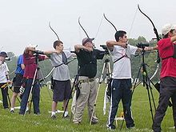
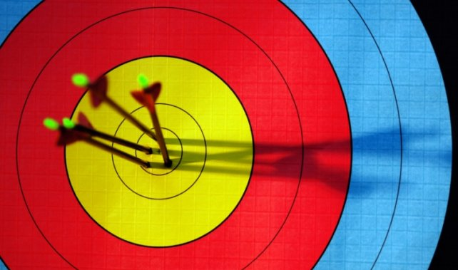

Każdy łucznik powinien wiedzieć, że poprawny i celny strzał
może zostać oddany dzięki odpowiedniej postawie. Nauka tego
elementu jest niezwykle istotna.
Przepis na prawidłową postawę
1. Stajemy bokiem do celu, tak aby stopy były na jednej linii z celem.
2. Prostujemy naszą sylwetkę.
3. Unosimy rękę trzymającą łuk nad linię strzału.
4. Stajemy w rozkroku nie większym niż szerokość bioder.
5. Prostujemy i blokujemy łokieć i staw barkowy ręki, która trzyma łuk.

Jak prawidłowo napiąć łuk
1. Chwytamy cięciwę palcami (tak, żeby znalazła się na pierwszym zgięciu palców).
2. Pozostałą część palców oraz dłoni pozostawiamy wyprostowaną.
3. Należy pamiętać, aby nie ściskać palcami nasadki.
4. Dłoń powinna lekko trzymać łuk.
5. Naciągamy cięciwę do momentu, gdy oprze się ona o brodę.

Unikaj błędów, czyli jak dobrze strzelać z łuku
Prawidłowe ułożenie palców: cięciwa powinna znajdować
się na załamaniu między paliczkami. Palec wskazujący nad
strzałą, a serdeczny i środkowy pod strzałą.
Właściwe naciąganie cięciwy: nie można łapać
strzały palcami. Naciągaj cięciwę za pomocą mięśni
pleców (a nie ramion). Ramię powinno znajdować się
w tej samej linii co strzała. Następnie należy ciągnąć
cięciwę do momentu, gdy palcem wskazującym dotkniemy
brody, a cięciwa dotknie ust i nosa.
Wpatrzenie się w środek tarczy: strzałą namierzamy
cel. Początkowo może wydawać się trudne, ale z czasem nabieramy wprawy.